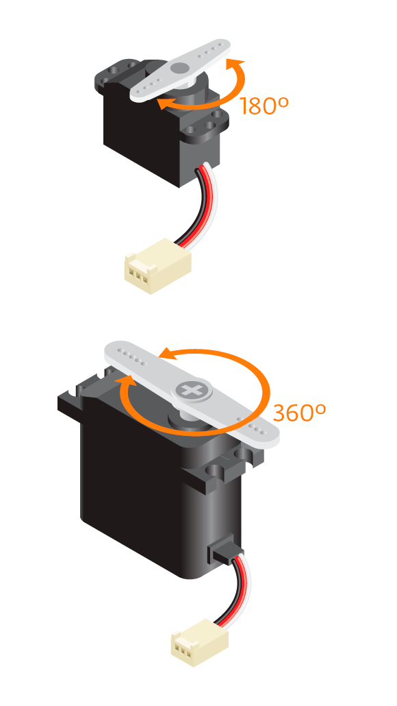
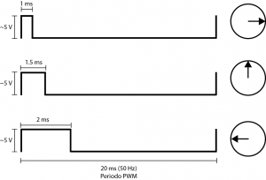
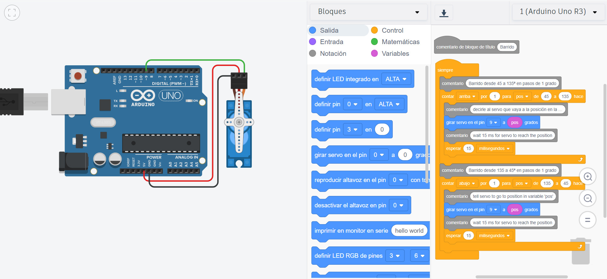

Servo
Existen dos tipos de servo-motores. Los de rotación continua (360º) y los de 180º, con estos últimos vamos a realizar nuestra práctica.

Existen dos tipos de servo-motores. Los de rotación continua (360º) y los de 180º, con estos últimos vamos a realizar nuestra práctica.

Para que el servo realice su tarea, es necesario enviarle una señal PWM, donde el tiempo en alto es equivalente a la posición del servo. El cual, tendrá que estar entre 1 y 2 ms y el periodo total deberá ser de 20 ms (50 Hz), por lo que sólo podremos cambiar de posición cada 20 ms. Recordando que estos parámetros aplican para el servo SG90, si utilizan otro servo es necesario revisar su datasheet.
La siguiente imagen pretende explicar este punto:

Este servo tiene un ángulo de giro de 180º. Es decir, podemos hacer un barrido entre -90º y 90º. Para indicar la cantidad de giro tenemos que enviarles una señal PWM. Para un giro de 0º (posición derecha) se le envía un pulso de 1 ms; y finalmente, para un giro de 90º (posición central) se le envía un PWM de 1.5 ms; y para indicarle un giro de 180º (posición izquierda) se le envía un PWM de 2 ms.
Vamos a realizar la siguiente práctica:

Obra publicada con Licencia Creative Commons Reconocimiento No comercial Compartir igual 4.0